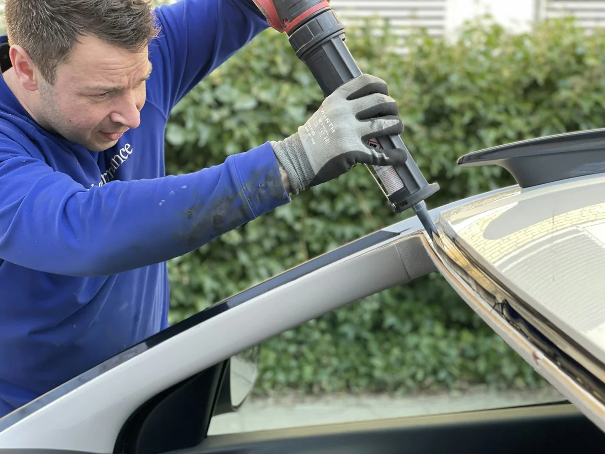

01 / AUTO GLASS CARE
Windshield repair
Small chip? Start here. Learn what makes damage a possible candidate for repair.
Explore repairFrom a chip in your windshield to a broken rear window, find the information you need to take the next step.
Small chip? Start here. Learn what makes damage a possible candidate for repair.
Explore repair
For damaged glass that needs a fresh start. Find out what to expect from replacement.
Explore replacement
Broken door or rear window? Get help identifying the right replacement glass.
Explore auto glassHave the year, make, model and trim ready. Different versions of the same vehicle may use different glass.
Tell us which window is affected and where the damage is. Photos help start the conversation.
Mention cameras, rain sensors, heating elements or a head-up display when discussing replacement.
Share your vehicle details and describe the damaged glass. A photo can help.
Discuss the assessment, glass requirements, pricing and appointment availability.
Confirm the details with the shop and get clear instructions for the next step.
Tell us about your glass. We’ll help with the next step.